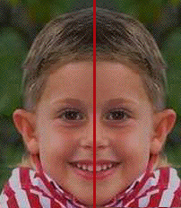
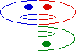

| A shape exhibits reflectional symmetry if |
|
|
|
| then the resulting combination is (approximately) the same as the original. |
| For example, human faces are approximately reflectionally symmetric across a vertical bisector. |
|  |
| Click the picture for another view. |
| Here is a schematic of reflection across vertical and horizontal lines. |
|  |